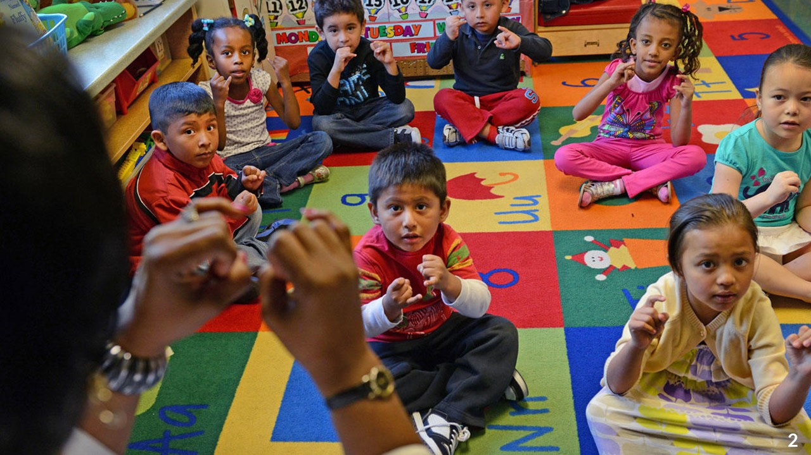

9.1 This part of the course is still under construction! To be added by June 14, 2024. Proceed with caution!
Figure 9.1: Webpage under construction!
9.2 Your final
Verbal communication is crucial in most professions and is often not taught in courses. From this final, my hope is you will learn more how to create better presentations and how to present more technical content to a broader audience. The goal of this final is to develop and deliver a clear, concise, and engaging presentation on a topic of your choice within a strict 5-minute time limit, but your target audience will be randomized. This exercise will help you improve your research, organization, and public speaking skills.
9.2.1 Your choice of topic, but first come first serve
The topic can be anything you learned in class today. It can be on something you wrote, in class discussion, contents in the book or other materials you read/watched, as long as it relates back to security, privacy, ethics, and equity. To avoid repeated talks, you must email me your topic by June 21. I will let you know if you’re the first to propose the topic, so you should come up with a few different topics just in case your top pick has already been taken.
Many much of the information provided here is created by my colleague, Jon Schwabish, a senior fellow at the Urban Institute and an author on several books on data viz and communication. I’ve added a few personal tips as well.
9.4 A real 5-minute pitch
Our focus will be on engaging trustees in our strategic planning process. As a precursor to strategic planning, we want to illustrate the various kinds of work that Urban does today that trustees can understand our theory of change before diving into big strategy thinking. Therefore, we are planning a content segment titled “Understanding Urban’s Work”, where five experts would present on concrete examples of different types of Urban’s work and how we bring insight from evidence to point of decision, to help changemakers accelerate solutions.
Each presentation would be about five minutes long, followed by seven minutes of questions and/or discussion by trustees. Donald Marron has agreed to moderate the segment and facilitate the presentations and respective Q&A. Would you be willing to present on the IRS Data and Validation Server project and how it makes an impact?
What type of presentation are you giving?: A 5-minute presentation.
Who is your audience?: Urban Institute’s Board of Trustees, diverse technical backgrounds, but all interested in evidence-based public policymaking.
What is the headline message of your presentation?: Advance the promise of more evidence-based public policymaking using administrative data.
What do you want your audience to do with your conclusion?: To continue to support data science and data privacy methods to safely expand access to confidential administrative data.
Figure 9.2: Title page
I’m excited to be presenting on the Urban Institute’s collaboration with the IRS to advance the promise of more evidence-based public policymaking.
9.4.1 Slide 1
Figure 9.3: Slide 1
Federal tax data, derived from individuals’ and businesses’ tax and information returns, are invaluable resources for understanding the economic effects of policies, social and economic forces, and more on individuals, families, and firms.
9.4.2 Slide 2

Figure 9.4: Slide 2
For example, Raj Chetty and colleagues have used tax data to study economic mobility across generations and how elementary school teacher quality affects economic outcomes later in life. However, full access to these data are only available to select government agencies, a very limited number of researchers working in collaboration with analysts in those agencies, or through highly selective research programs run by these agencies.
So, how can we expand access to administrative tax data to other researchers, government officials, and public policymakers instead of the select few like Raj Chetty? This is where our team comes in. We are developing new data science tools to allow researchers access to sensitive data while providing more robust privacy protection. This new technology can also be applied to other administrative data!
Now is the ideal time to develop such new technology and methodology as the Evidence Act commits the federal government to expand access to data along with Biden’s executive order, directing federal agencies and White House offices to examine barriers to racial equity and initiate several efforts to address equity for people of color and underserved communities. Furthermore, Len Burman, an institute fellow and co-PI on this body of work, is a member of the Advisory Committee on Data for Evidence Building, which Urban is supporting with internal funds.
9.4.3 Slide 3
Figure 9.5: Slide 3
So, how does our data science tools work to allow access to data? Typically, researchers access data in two ways, direct access to the confidential data or public statistics and data. However, direct access is difficult due to clearance or eligibility issues, such as being a US citizen. Public statistics and data aren’t much better either. Awareness of the growing threats to public use microdata and a general concern for protecting participants’ data privacy have led the IRS to progressively restrict and distort more information being released in their public statistics and data, making the information less useful for academic research and policy analysis.
With our data science tools, we are improving the quality of the public data and creating a new tier in-between these two extremes.
Insert explainer on how these privacy protecting tools works with the art example.
Note that we are also looking into including demographic information in datasets so we can analyze disparate impacts of policies by race and ethnicity.
When comparing the original Seurat painting, we can still see figures in the park.
9.4.4 Slide 4
Figure 9.6: Slide 4
However, sometimes our alterations to the data can be too much. For example, many people would say the resulting painting would not be a Seurat painting! Or you smoothed out the high income individuals that I wanted to analyze!
Insert explainer on how these privacy protecting tools works with the art example again for the validation server.
We expect our tools to become critical components of the federal, state, and local data infrastructure. For example, our tools are the basis for creating synthetic data tools and educational materials for the city of Pittsburgh. We are also engaging with Congressional Budget Office, Environmental Protection Agency, Joint Committee on Taxation, Duke University, and American Enterprise Institute to name a few.
9.4.5 Slide 5
Figure 9.7: Slide 5
How we are supporting this impactful work? Thanks to these entities, we have fundraised over $5 million. This demonstrates how our body of work has become a big growth area for the Urban Institute. We are breaking ground in the intersection of data privacy and public policy that is providing more evidence-based research, which has been Urban’s business since its founding. I cannot emphasize enough that we are advancing this mission more than ever, where we are becoming the leaders in this area by creating unprecedent access to administrative data to make these better public policy decision-making.